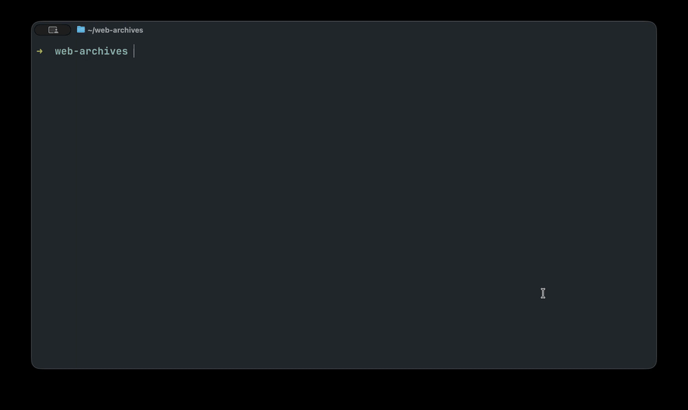

A front end for Browsertrix Crawler
Say what you
want archived.
btrix settles the scope with you, writes the crawl config, and runs Browsertrix Crawler in a container on your machine. What comes back is a WACZ file you can replay, keep, and hand to anyone.
$npm install -g @edsu/btrix
macOS or Linux · Docker or Podman · Node 22.19+
Crawling needs no account. Bring your own model, or run one locally.
_ _ _ | |__ | |_ _ _ (_)__ __ high-fidelity web archives | '_ \| _|| '_|| |\ \ / Browsertrix Crawler, driven by conversation |_.__/ \__||_| |_|/_\_\ ./btrix · 39G free · anthropic/claude-opus-5 3 configs · 1 archive 210M · 1 login profile cultprotest never run toi done 84/84 210M wikipedia → web-archiving crawling 0/12 ♥ Webrecorder builds the crawler — opencollective.com/webrecorder btrix │ crawling wikipedia → web-archiving · 0/12 · 0% still discovering · 0.0 pg/min archive 0B · profile 300M · 12G free · screencast :9037 fetching https://en.wikipedia.org/wiki/Web_archiving
The exchange
It runs on sentences, not flags.
Everything btrix does, it does because you asked for it in the terminal. There is no config syntax to learn first — though the config it writes is plain YAML, and yours to edit.
“Archive the Wikipedia article on web archiving and everything it links to”
Settles the scope with you first, then writes the config.
“Crawl wikipedia”
Starts the crawl in the background. Progress appears in the widget.
“Stop it”
Asks the crawler to shut down cleanly, keeping what it captured.
“Did that crawl work?”
Reports what was actually captured, and flags anything suspicious.
“Replay web-archiving”
Serves the archive and gives you a ReplayWeb.page link.
“This site needs a login”
Opens a browser for you to sign in, and saves the profile. btrix never sees the password.
“Why did this site only give me one page?”
Opens a real browser on the page and works out a custom behavior against it.
“What's taking up space?”
Reports old working directories, and clears them if you agree.
Recorded
One session, start to finish.

Five pages out of en.wikipedia.org: described, crawled, and replayed. Crawls are detached, so this one would have survived quitting the session.
On disk
Everything in one directory, beside your work.
./ ├── btrix/ │ ├── config/wikipedia.yaml your crawl configs │ ├── out/web-archiving.wacz finished archives │ ├── out/web-archiving.btrix.json how each was made │ ├── profiles/ browser logins │ ├── runs/ working files, kept │ └── failed/ nothing came back └── notes.md, .git/ your stuff, untouched
- Put it anywhere
btrix --dir /Volumes/archive/wikipediamoves the whole store — useful for a large crawl on an external disk. The store writes its own.gitignore, so archives and profiles stay out of version control andconfig/stays yours to commit.- Crawls outlive the session
- Quit, come back tomorrow, and the widget picks the crawl back up. When one finishes you get a notification and a summary.
- btrix never handles a password
- For a site behind a login it opens a browser at
localhost:6080. You sign in there; the profile it saves is kept private and mounted read-only into the crawl. - Any model, including a local one
/loginconnects a Claude, ChatGPT or Copilot subscription, or set an API key. A server on your own machine that speaks the OpenAI API works too — LM Studio, Ollama, vLLM, llama.cpp.